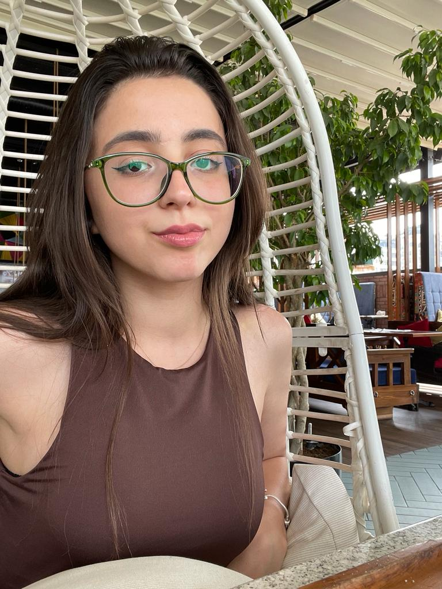

Group Members
- Lala Aslanova Nasib Pashayev
- Nurlan Alakbarli
- Rufat Miriyev
Lala Aslanova

She is a graduate of Technical High School of Natural Sciences. Lala took up faculty of Information Technology in ADA university. She would like her career to revolve around "Artificial Intelligence", which her fondly call "the magic of technology". She is interested in the ability of a machine to display human-like capabilities such as reasoning, learning, planning and creativity. In addition, she mentions that swimming and taking care of animals are her favorite activities.